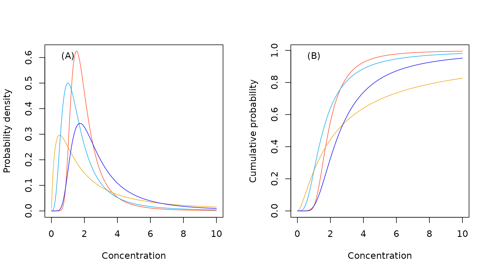
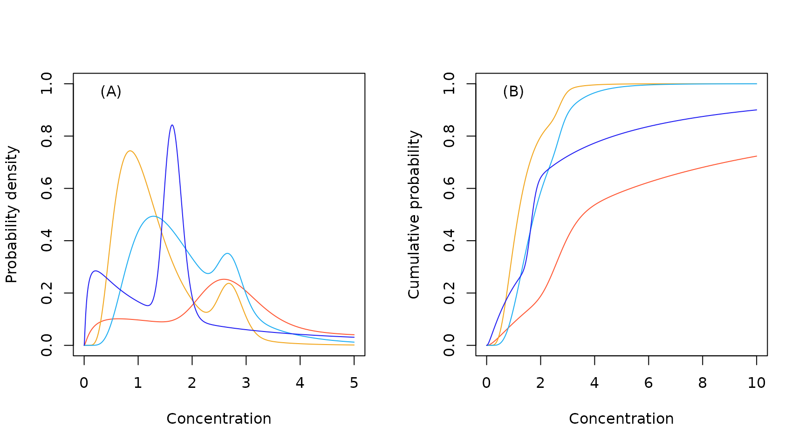

Selecting Distributions
ssdtools Team
2023-12-07
Source:vignettes/distributions.Rmd
distributions.RmdModel selection
It can be difficult to select a ‘best fitting’ distribution when modeling species sensitivity data with low sample sizes. In these situations, model averaging can be used to fit multiple distributions and calculate a weighted average HCx and confidence limits (Schwarz and Tillmanns 2019). Distributions selected to use in model averaging must be bounded by zero given that effect concentrations cannot be negative. Furthermore, the selected distributions should provide a variety of shapes to capture the diversity of shapes in empirical species sensitivity distributions.
By default, the ssdtools uses Akaike Information Criterion corrected
for small sample size (AICc) as a measure of relative quality of fit for
different distributions and as the basis for calculating the
model-averaged HCx.
However, if two or more similar models fit the data well then the
support for this type of shape will be over-inflated (Burnham and Anderson 2002).
Default Distributions
To avoid such model redundancy (Burnham and Anderson 2002), ssdtools and the accompanying Shiny app (Dalgarno 2021) fit three different shape distributions by default: the log-normal, log-logistic and gamma.
The three distributions are plotted below with a mean of 2 and standard deviation of 2 on the (natural) log concentration scale or around 7.4 on the concentration scale.
library(ssdtools)
#> Warning in checkMatrixPackageVersion(getOption("TMB.check.Matrix", TRUE)): Package version inconsistency detected.
#> TMB was built with Matrix version 1.6.3
#> Current Matrix version is 1.6.1.1
#> Please re-install 'TMB' from source using install.packages('TMB', type = 'source') or ask CRAN for a binary version of 'TMB' matching CRAN's 'Matrix' package
library(ggplot2)
theme_set(theme_bw())
set.seed(7)
ssd_plot_cdf(ssd_match_moments(meanlog = 2, sdlog = 2)) +
scale_color_ssd()
Log-normal distribution
The log-normal distribution was selected as the starting distribution given the data are for effect concentrations.
The log-normal distribution does have a couple limitations to consider when fitting species sensitivity data. First, on the logarithmic scale, the normal distribution is symmetrical. Second, the log-normal distribution decays too quickly in the tails giving narrow tails which may not adequately fit the data. Additional distributions were selected to compensate for these deficiencies.
Log-logistic distribution
The log-logistic distribution is often used as a candidate SSD primarily because of its analytic tractability (Aldenberg and Slob 1993). We included it because it has wider tails than the log-normal and because it is a specific case of the more general Burr family of distributions Burr (1942).
Gamma distribution
The gamma distribution is a two-parameter distribution commonly used to model failure times or time to events. For use in modeling species sensitivity data, the gamma distribution has two key features that provide additional flexibility relative to the log-normal distribution: 1) it is non-symmetrical on the logarithmic scale; and 2) it has wider tails. The Weibull distribution was considered as an alternative but the Gamma distribution is generally more flexible.
All Distributions
For completeness the hazard concentrations for the other stable
distributions provided by ssdtools are plotted below with a
mean of 2 and standard deviation of 2 on the (natural) log concentration
scale.
set.seed(7)
ssd_plot_cdf(ssd_match_moments(dists = ssd_dists_all(), meanlog = 2, sdlog = 2)) +
theme(legend.position = "bottom") +
scale_color_ssd()
#> Warning: This manual palette can handle a maximum of 8 values. You have
#> supplied 10
#> Warning: Removed 198 rows containing missing values (`geom_line()`).
References
Licensing
Copyright 2023 Province of British Columbia, Environment and Climate Change Canada, and Australian Government Department of Climate Change, Energy, the Environment and Water
The documentation is released under the CC BY 4.0 License
The code is released under the Apache License 2.0